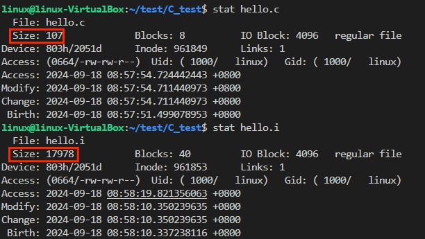
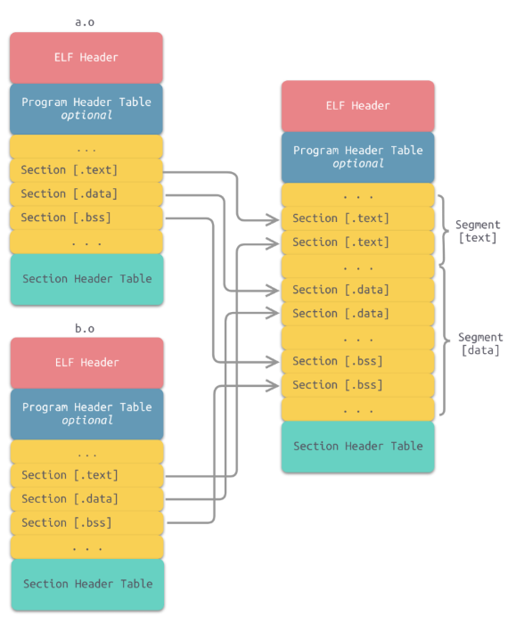
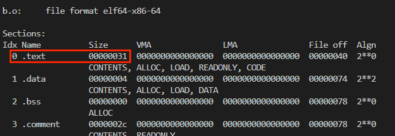
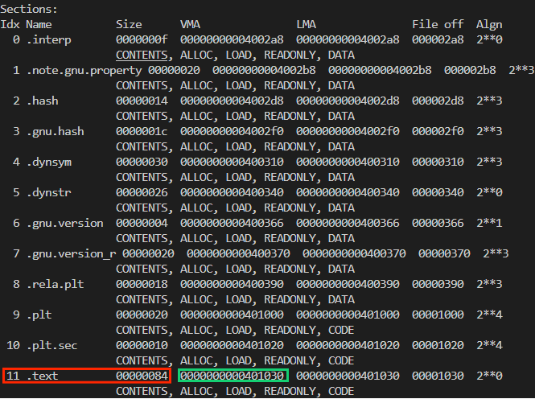
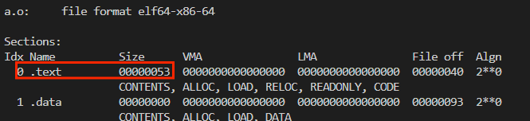
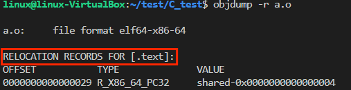

目录
- 编译过程概览
- 准备工作
- 预处理
- 编译
- 汇编
- 链接
编译过程概览

工具
-
编译工具：GCC(GNU Compiler -Collection)，包含GCC、Binutils、C运行库等
-
Binutils：一组二进制程序处理工具，包括：ar、objdump、as、ld、ldd、readelf、size等
| 工具 | 作用 |
|---|---|
| ar | 主要用于创建、修改以及从静态库中提取文件 |
| objdump | 主要功能是将二进制代码转换为汇编代码 |
| as | 主要用于汇编。它将汇编语言源代码（.s文件）转换成机器语言的目标代码（.o文件） |
| ld | 链接器 |
| ldd | 列出可执行文件或共享库所依赖的其他共享库 |
| readelf | 用于查看ELF（Executable and Linkable Format）格式文件的信息，如文件头、段（section）信息、符号表等。 |
演示代码:
#include <stdio.h>
#define VAR 1
//打印“hello world"
int main()
{
int b=VAR;
printf("hello world!\n");
return 0;
}
预处理(Preprocessing)
-
命令：
- gcc -E hello.c -o hello.i
-
主要内容:
- 移除#define指令，替换所有的宏定义，并且根据条件预编译指令(如#if、#ifdef、#ifndef等)包含或排除相应的代码段
- 处理#include预编译指令，将被包含的文件插入到该预编译指令的位置
- 删除所有注释("//"和"/* */")
//hello.i代码片段
extern void funlockfile (FILE *__stream) __attribute__ ((__nothrow__ , __leaf__));
# 885 "/usr/include/stdio.h" 3 4
extern int __uflow (FILE *);
extern int __overflow (FILE *, int);
# 902 "/usr/include/stdio.h" 3 4
# 2 "hello.c" 2
# 5 "hello.c"
int main()
{
int a=1;
printf("hello world!\n");
return 0;
}
- .c文件经预处理后生成的.i文件大小显著增加

编译(Compilation)
- 编译： 将经过预处理之后的.i文件进行一系列的语法分析、语义分析及代码优化后生成相应的汇编代码
- 命令：
- gcc -S hello.i -o hello.s
- 主要内容：
- 词法分析：将源代码分割成一系列的标记，如关键字、标识符、运算符等
- 语法分析：根据语法规则来分析由词法分析生成的标记序列，构建一颗语法树。这棵树表示了程序的语法结构
- 语义分析：检查语义正确性，包括类型检查、作用域检查等
- 代码优化：对代码进行多种优化(循环优化、冗余代码消除)，提高程序的执行效率
//hello.s代码片段
main:
.LFB0:
.cfi_startproc
endbr64
pushq %rbp
.cfi_def_cfa_offset 16
.cfi_offset 6, -16
movq %rsp, %rbp
.cfi_def_cfa_register 6
subq $16, %rsp
movl $1, -4(%rbp)
leaq .LC0(%rip), %rax
movq %rax, %rdi
call puts@PLT
movl $0, %eax
leave
.cfi_def_cfa 7, 8
ret
.cfi_endproc
汇编(Assembly)
- 汇编： 指把汇编语言代码翻译成目标机器指令的过程，这一步产生的文件叫做目标文件，是ELF(Executable and Linkable Format)格式的可重定向文件。
- 指令：
- gcc -c hello.s -o hello.o
- 主要任务
- 翻译汇编指令：汇编器(Binutils中的as)读取汇编代码，并将其中的每一条汇编指令翻译成对应的机器指令。这些机器指令是计算机硬件能够直接识别和执行的低级代码。
ELF的文件格式

- ELF header：描述体系结构和操作系统等基本信息，指出section header table和program header table在文件的位置
- program header table，这个是从运行的角度来看ELF文件的，主要给出了各个segment的信息
-
.text：已编译程序的指令代码段。
-
.rodata：只读数据。
-
.data：已初始化的C程序全局变量和静态局部变量。
-
.bss：未初始化的C程序全局变量和静态局部变量。
-
.debug：调试符号表，调试器用此段的信息帮助调试。
-
.symtab：一个符号表（symbol table），它存放程序中被定义和引用的函数和全局变量的信息
-
section header table：保存了所有的section的信息
-
查看hello.o文件
- hello.o目标文件为ELF格式的文件，不能当做普通文本文件打开
-
readelf: 显示 ELF（Executable and Linkable Format）文件信息的工具
-
objdump: 用于显示二进制文件信息。可以显示反汇编代码、符号表、重定位表等
查看符号表：readelf -s hello.o
Symbol table '.symtab' contains 6 entries:
Num: Value Size Type Bind Vis Ndx Name
0: 0000000000000000 0 NOTYPE LOCAL DEFAULT UND
1: 0000000000000000 0 FILE LOCAL DEFAULT ABS hello.c
2: 0000000000000000 0 SECTION LOCAL DEFAULT 1 .text
3: 0000000000000000 0 SECTION LOCAL DEFAULT 5 .rodata
4: 0000000000000000 41 FUNC GLOBAL DEFAULT 1 main
5: 0000000000000000 0 NOTYPE GLOBAL DEFAULT UND puts
- Num:符号编号，用于唯一标识符号
- Value:对于函数和变量，这通常是它们在内存中的地址(在对象文件中，这通常是相对于段的偏移量)。在对象文件中，由于最终的内存地址尚未确定，这些值通常为0
- Size:符号的大小(以字节为单位)
- Type:符号的类型(FUNC、OBJECT、FILE、SECTION、NOTYPE)
- Ndx:符号所在的段索引，未定义的外部符号通常是UND，对于特殊符号(如FILE和SECTION)可以是ABS或其他特殊值
- Name:符号的名称
查看代码段：objdump -d hello.o
hello.o: file format elf64-x86-64
Disassembly of section .text:
0000000000000000 <main>:
//PC地址 指令编码 指令的汇编格式
0: f3 0f 1e fa endbr64
4: 55 push %rbp
5: 48 89 e5 mov %rsp,%rbp
8: 48 83 ec 10 sub $0x10,%rsp
c: c7 45 fc 01 00 00 00 movl $0x1,-0x4(%rbp) //初始化局部变量
13: 48 8d 05 00 00 00 00 lea 0x0(%rip),%rax # 1a <main+0x1a>
1a: 48 89 c7 mov %rax,%rdi
1d: e8 00 00 00 00 call 22 <main+0x22> //函数调用
22: b8 00 00 00 00 mov $0x0,%eax
27: c9 leave
28: c3 ret
注：这段汇编代码表示了main函数的执行流程，包括堆栈初始化、局部变量初始化、函数调用准备，返回值。
链接(Linking)
-
链接： 将编译生成的目标文件(.o 文件)与库文件等组织起来，形成最终的可执行文件
-
静态链接(Static Link)
- 原理： 在编译时期，链接器将程序所需的库文件(如标准库、第三方库等)的内容复制到可执行文件中，合并成一个单独的可执行文件。在这个过程中，链接器会解析目标代码中的符号引用(函数名、全局变量名等)，将库文件中的代码和数据直接复制到可执行文件中，替换原来的符号引用。
步骤
-
1.地址空间分配：
- 链接器首先扫描所有输入的目标文件，收集它们的段信息，然后根据一定的策略（如按序叠加或相似段合并）将相同性质的段合并到一起。在合并的过程中，链接器为这些段分配虚拟地址，并建立映射关系
-
2.符号解析：
- 确保程序中引用的所有符号(如函数和变量)都能正确找到它们的定义
-
3.重定位：
- 链接器（Linker）将多个编译后的目标文件（.o 文件）合并成一个可执行文件时的一个重要步骤。重定位的目的是确定程序中每个符号（如函数、变量等）的运行时内存地址，并修改对这些符号的引用，使之指向正确的地址
静态链接过程详解：
a.c
extern int shared;
void swap(int *a,int *b);
int main()
{
int a=100;
swap(&a,&shared);
}
b.c
int shared=1;
void swap(int *a,int *b)
{
int tmp=*a;
*a=*b;
*b=tmp;
}
- a.c文件引用b.c文件中的shared变量和swap函数。
- 对a.c文件进行编译，执行gcc -c a.c -o a.o得到a.o目标文件，使用readelf -s a.o查看符号表

- 查看b.o目标文件的符号表：

- 将a.o和b.o链接生成一个目标文件：ld a.o b.o -e main -o ab

- 链接规则: 将a.o和b.o相同的段进行合并

- 以.text段为例：


-
ab的.text段大小为84
 -
File off:各个段在目标文件中的偏移量
-
VMA：各个段加载到内存时的虚拟内存地址
符号解析
-
链接完成后，所有符号的虚拟地址就已经确定了
-
在链接前，各个符号在各自目标文件中相应段内的偏移是固定的。
- 以swap函数为例

- 以swap函数为例
-
swap在b.o的.text段的开始位置。在链接时，a和b的text段会合并，a的text段会在b的text段之前，如下图所示：

- a.o的text段大小是53，如下图所示：
 - 合并后的text段的虚拟内存地址是401030,如下图所示：

401030+53=401083，这个地址就是合并后b.o的text段的位置，又因为swap在b.o的text中偏移量是0，所以可知：401083就是swap的虚拟内存地址。
- objdump -d ab 查看ab的反汇编代码

重定位
- 首先，看a.o的指令段中是如何调用swap函数的：

e8是call指令，它后面的4个字节，是要调用的函数相对call下一条指令的偏移量
- ab文件中，上面的call指令中的地址部分：

call指令的下一条指令地址是蓝色框中的401068
401068+1b=401083,这正好是swap的地址，如图中绿框所示。
重定位表
- 链接器如何知道哪些指令的地址需要调整？——重定位表(Relocation Table)
- a.o的重定位表：
 - 重定位表记录了符号引用的位置，指明了在段中的偏移量及修改方式，确保程序加载时地址能正确调整
动态链接(Dynamic Link)
- 动态链接： 是指将程序在运行时所需的代码片段从库文件中加载到内存，并在程序执行时完成链接的技术。
- 动态链接的基本概念：
-
共享库（Shared Libraries）：也称为动态库，包含可由多个程序共享的代码和资源的文件。在Linux系统中，共享库通常以
.so（Shared Object）为文件扩展名。 -
动态加载（Dynamic Loading）：程序在运行时，根据需要加载共享库。这意味着不是所有的库函数都在程序启动时加载，而是在实际调用时才加载到内存中。
-
动态链接器（Dynamic Linker）：也称为运行时链接器，它是一个特殊的程序，负责在程序执行时处理共享库的加载、符号解析和重定位。
-
//program1.c
#include "lib.h"
int main()
{
print_value(1);
return 0;
}
//program2.c
#include "lib.h"
int main()
{
print_value(2);
return 0;
}
//lib.h
#ifndef LIB_H
#define LIB_H
void print_value(int i);
#endif
//lib.c
#include <stdio.h>
void print_value(int i)
{
printf("%d\n", i);
}
- 将lib.c编译成共享对象文件：
gcc -fPIC -shared -o lib.so lib.c- shared:指示编译器生成一个共享库
- fPIC:"Position Independent Code",指示编译器生成可以在内存中的任何位置运行的代码，而不是假设代码将被加载到某个特定的地址,支持多个进程之间的共享和动态链接。
- 编译program1.c与program2.c
- gcc -o program1 program1.c ./lib.so
- gcc -o program2 program2.c ./lib.so
| 静态链接 | 动态链接 | |
|---|---|---|
| 链接时机 | 编译时 | 运行时 |
| 链接方式 | 将所有需要的库函数和数据直接嵌入到可执行文件中 | 仅在需要时从外部库中加载所需的函数和数据 |
| 可执行文件大小 | 通常较大，因为包含了所有依赖的库代码 | 较小，因为不包含库代码，只包含引用和路径 |
| 内存使用 | 如果多个程序静态链接了相同的库，每个程序都会在内存中保持其拷贝的副本，可能导致资源浪费 | 多个运行中的程序可以共享同一份库的副本，节省内存 |
| 更新和维护 | 更新库时需要重新编译和部署整个应用程序 | 更新库后，所有使用该动态库的应用程序无需重新编译，只需重新启动即可使用新的库版本 |
| 依赖性 | 不依赖于外部库文件，减少了依赖性问题 | 依赖于外部库文件，可能存在兼容性问题和安全性问题 |
| 性能 | 程序启动时可能更快，因为所有需要的代码都已加载 | 启动时可能需要加载外部库，导致启动稍慢 |
| 应用场景 | 适用于对独立性、安全性和稳定性要求较高的场景 | 适用于需要频繁更新、内存和存储资源有限、或支持模块化开发的场景 |